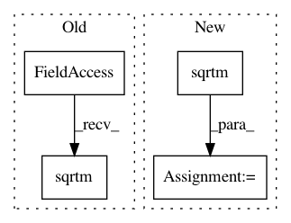

6f4671eb1b466bf5c484dea3830d4e1bb61709b8,geomstats/invariant_metric.py,InvariantMetric,left_log_from_identity,#InvariantMetric#Any#,214
Before Change
point = self.group.regularize(point)
inner_prod_mat = self.inner_product_mat_at_identity
sqrt_inv_inner_prod_mat = scipy.linalg.sqrtm(gs.linalg.inv(
inner_prod_mat))
assert sqrt_inv_inner_prod_mat.shape == (self.group.dimension,) * 2
log = gs.matmul(point, sqrt_inv_inner_prod_mat.transpose())
log = self.group.regularize_tangent_vec_at_identity(
After Change
point = self.group.regularize(point)
inner_prod_mat = self.inner_product_mat_at_identity
inv_inner_prod_mat = gs.linalg.inv(inner_prod_mat)
sqrt_inv_inner_prod_mat = spd_space.sqrtm(inv_inner_prod_mat)
assert sqrt_inv_inner_prod_mat.shape == ((1,)
+ (self.group.dimension,) * 2)
aux = np.squeeze(sqrt_inv_inner_prod_mat, axis=0)
log = gs.matmul(point, aux)
In pattern: SUPERPATTERN
Frequency: 3
Non-data size: 4
Instances
Project Name: geomstats/geomstats
Commit Name: 6f4671eb1b466bf5c484dea3830d4e1bb61709b8
Time: 2018-05-03
Author: ninamio78@gmail.com
File Name: geomstats/invariant_metric.py
Class Name: InvariantMetric
Method Name: left_log_from_identity
Project Name: geomstats/geomstats
Commit Name: ca7b264f69db393e3d1c704a20b4f22047d1998f
Time: 2018-05-08
Author: ninamio78@gmail.com
File Name: geomstats/spd_matrices_space.py
Class Name: SPDMetric
Method Name: exp
Project Name: geomstats/geomstats
Commit Name: ca7b264f69db393e3d1c704a20b4f22047d1998f
Time: 2018-05-08
Author: ninamio78@gmail.com
File Name: geomstats/spd_matrices_space.py
Class Name: SPDMetric
Method Name: log